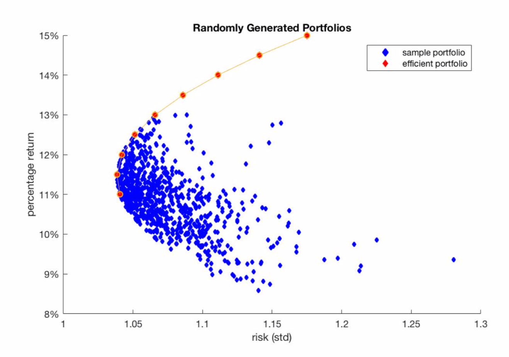

My projects
- Implemented a covert timing channel by which the source principal conveys information to the destination principal by using mechanisms in ways not intended for performing communications.
- Analyzed the performance in the metrics of raw channel bandwidth and channel fidelity rate.
- Implemented a FIFO consistent chat room using TCP sockets.
- Supported features include:
- Each server keeps a log of messages that other servers send to it.
- Servers can detect the a server has failed within one second.
- Implemented a complete multicore system capable of running simple parallel applications at the register-transfer level.
- Consisted of processor and cache.
- Processor is five-stage pipelined and supports stalling and bypassing.
- Cache supports both direct-mapped and set-associative with LRU policy.
- One of my favorite topics because it improves my logic so much!
- Haven't figured out a good way to explain this. It may sounds so easy even stupic without a more involved context. Will come back later.
-
This app makes recommendations that tailor to users' exact need to help them find the perfect pair. Heroku app URL (prototype) is here.
- TODO: will provide more details and polish it when I'm less tired.
- Achieved 91% classfication accuracy using N-gram and Naive Bayes models.
- Used different methods to apply smoothing and handle unknown words.
- Got the 3rd place in the leaderboard of the class project!
- Coordinated farmer and animals to harvest efficiently.
- Coordinated children and shop to satisfy demands.
- Enforced tons of synchronization conditions to avoid objects crash/lost products.
- This game was really popular in my high school, thus it means special when I programmed it in my master.
- TODO: will provide a video demo when I'm less tired.
Third Place in Citadel Datathon
- Task: Analyze how various factors such as natural events
and governmental initiatives have influenced the quality of
water throughout time. We were given datasets of the
chemicals, droughts, water usage and industry occupational.
- Strategy: utilize clustering and regression and make various
data visualization to present findings.
- Testing: by case study. Please check out our report
for more. However, we cannot share the data due to integrity reasons.
- Implemented Porfolio Optimization Algorithm an using Laplacian
constriction and numerical analysis.

- Implemented a Machine Learning Algorithm to determine whether a
Tweet is sent from the President Trump or other ones.
Check this Contest Page for more.